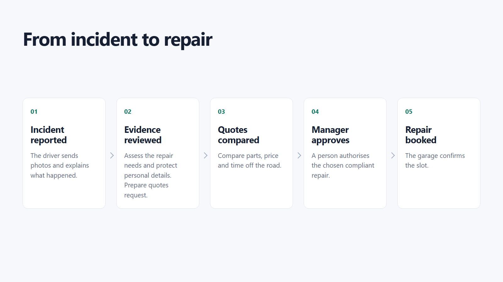
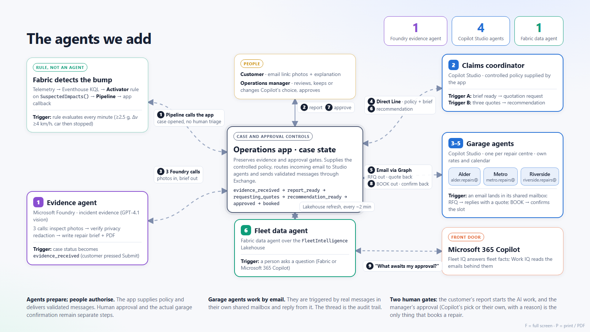
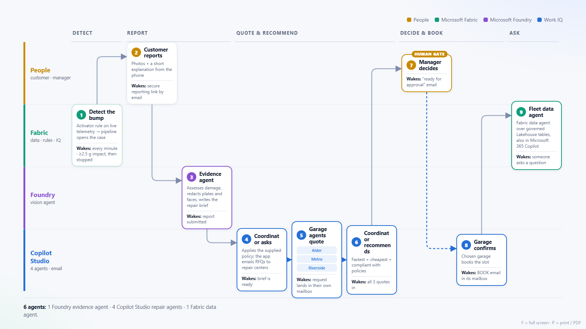
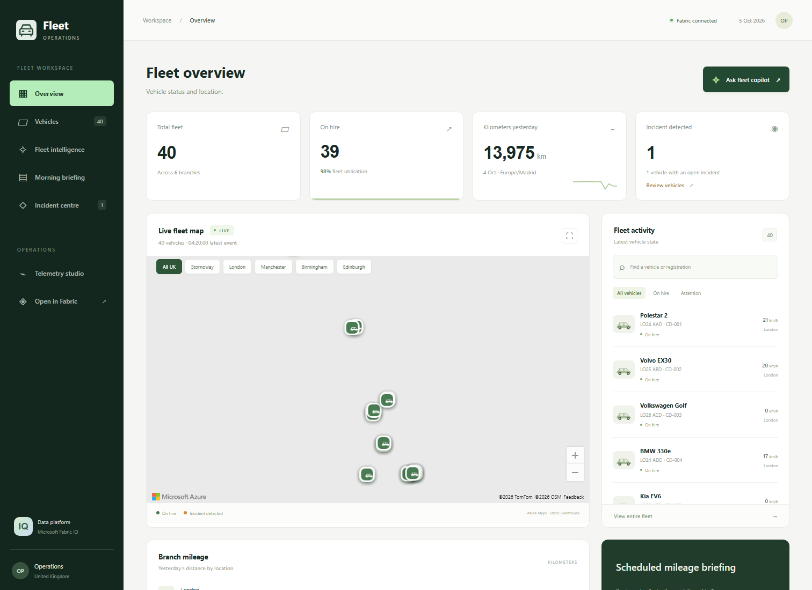

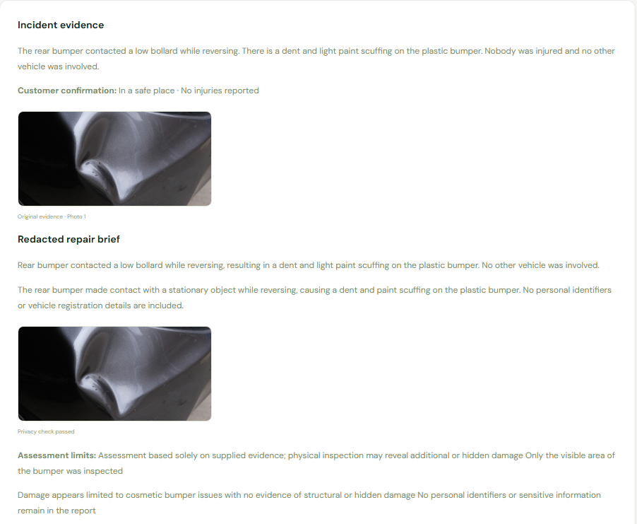
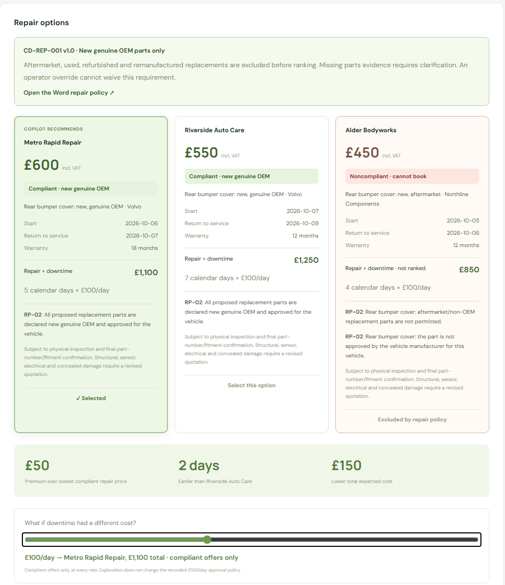
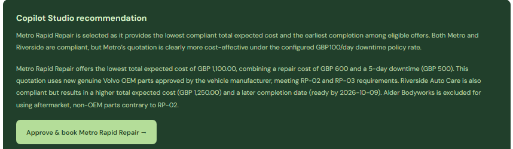
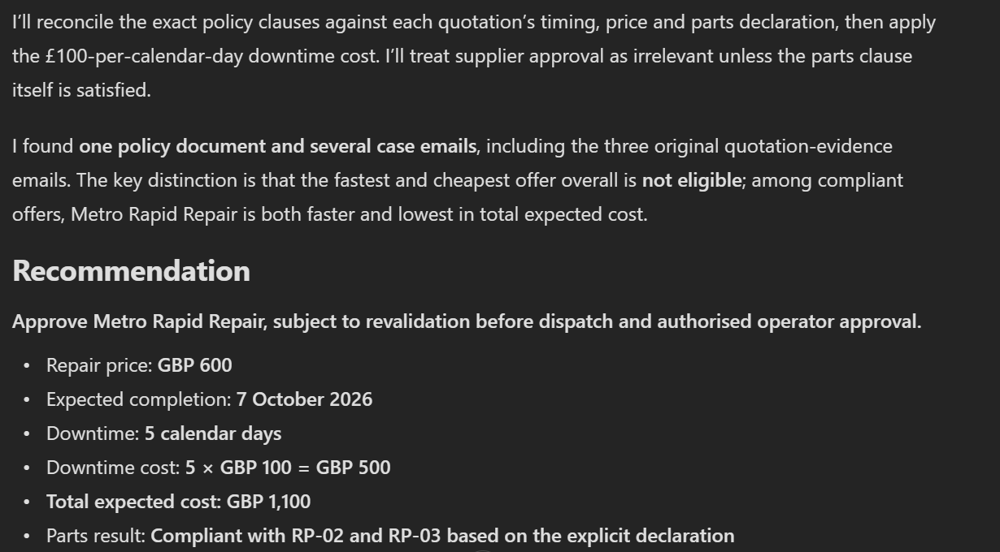
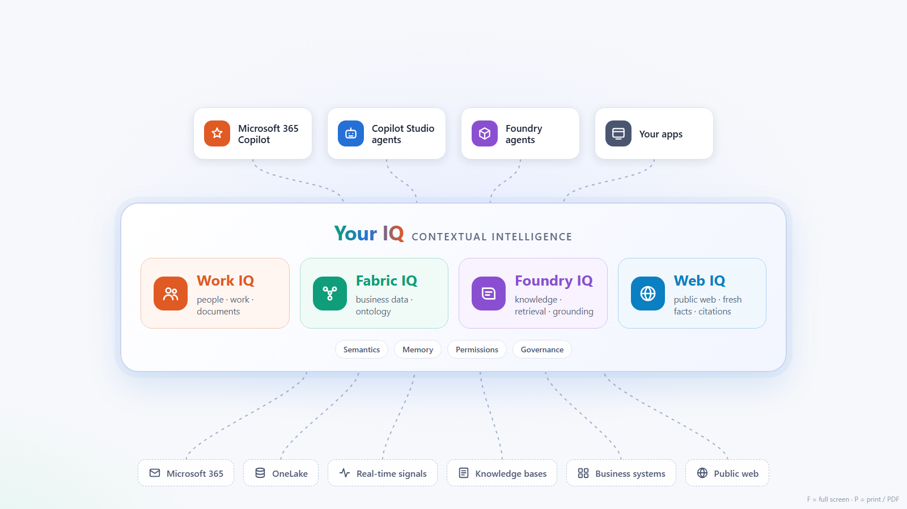

Microsoft IQ for insurance: from incident to an accountable decision
Sales narrative with screen-by-screen pitch and visuals
Audience: insurance executives, claims leaders, architects and technical staff.
Length: 10 minutes, followed by technical questions.
Opening sequence: the business operation, the agents we add, then the product lanes.
The pitch in 30 seconds
"A minor vehicle incident can trigger a disproportionate amount of work: collecting evidence, chasing garages, checking parts and comparing repair dates. The opportunity is not simply to add a chatbot. It is to connect the facts, the policy and the people so the next decision arrives with the evidence already organised. Microsoft IQ provides that context; focused agents do the preparation; your people retain authority."
Three ideas should remain with the audience: less coordination effort, better-informed repair decisions, and control that remains visible.
The images below are actual presentation and demo captures, not mock-ups. The capture register identifies their dates and cases. Use the live application for current status and The actual correspondence for the real emails.
Before presenting, run .\.venv\Scripts\python.exe -m tools.reset_mini. It prepares 39 cars On hire and one green MINI incident in Stornoway, sends the real initial email through the application, and leaves the customer report unsubmitted. The command prints the current case link and email subject.
1. Start with the operation, not the technology
Time: 45 seconds. Audience: everyone.
Open: Presentation, slide 1.
Say:
"This is a familiar motor-repair process. An incident is reported, the evidence is reviewed, quotes are compared, a manager approves and a garage confirms the booking. The friction lives between those steps: incomplete information, repeated questions and decisions waiting in inboxes. We will keep the process recognisable and improve the work around each decision."
Point to: the five stages, the original-parts rule and the manager's approval. Establish the business goal before naming a product.

Published presentation: the insurance operation, without company branding or technology labels.
Transition: "Now let us add narrowly defined responsibilities to that operation."
2. Introduce the agents as useful business roles
Time: 30 seconds. Audience: executives first; technical staff second.
Open: Presentation, agent overview.
Say:
"We are not introducing one agent with unlimited responsibility. An evidence agent prepares the repair brief. A coordinator requests and compares offers. Each garage supplies its own quotation and confirmation. A fleet assistant answers operational questions. These are focused roles around the people who remain accountable, not a replacement for the claims manager."
Point to: the evidence agent, coordinator, three garage agents and fleet data agent. Leave connection names and polling intervals for questions.

Published presentation: the agent roles and their orchestration.
Technical cue: the main journey uses one Foundry evidence agent, four Copilot Studio repair agents, and one Fabric data agent. The application supplies the controlled policy and delivers validated emails. Telemetry detection is a rule and pipeline, not another AI agent.
Transition: "Where should these responsibilities run, and where does each get its context?"
3. Put the roles into the Microsoft architecture
Time: 45 seconds. Audience: both groups.
Open: Presentation, slide 3: product lanes.
Say:
"Fabric holds the operational facts. Foundry prepares the photographic evidence. Copilot Studio agents draft and compare the repair offers, and the application delivers the correspondence. The manager retains authority. Work IQ lets us independently ask about the policy and what suppliers actually said."
Point to: the path across the lanes, then pause on the human approval gate. Do not read every box aloud.

Published presentation: implementation responsibilities, not a claim that the agents call one another directly.
Technical cue: the active runtime is the restored app-managed flow: secured Direct Line calls to Studio, controlled policy supplied in context, and scoped Exchange transport with immutable receipts. Foundry repair functions are retained but are not the active path.
Transition: "Let us follow one incident through that architecture."
4. Show that the incident belongs to a real operation
Time: 45 seconds. Audience: executives.
Open: Live fleet dashboard. Show 39 cars On hire and one Incident detected. Select the green MINI in Stornoway and open its incident.
Say:
"A car is not just a claim reference. It belongs to a rental, a branch and a fleet whose availability matters. Here, vehicle signals arrive in Fabric and can open an incident for attention. The business context tells us which asset is affected and why its time off the road matters."
Point to: vehicle state, location and branch context. Do not quote the reference screenshot's mileage as today's live total.

Recorded fleet interface, cropped to the operational content. Statistics are the captured snapshot.
Technical cue: Eventhouse holds telemetry; Activator and a Data Factory pipeline open cases. Fabric IQ's ontology relates Vehicle, Rental, Branch, Incident and RepairQuotation. The published data agent currently queries the governed Lakehouse tables; it is not directly connected to the ontology as a source.
Transition: "The next step should be easy for the customer, not another administrative burden."
5. Make the customer interaction straightforward
Time: 45 seconds. Audience: executives and customer-experience leaders.
Open: Outlook in the demo administrator's session, which represents the customer inbox for this presentation. Find [case reference] [REPORT] Your secure incident report link and open its reporting link. Show the actual customer website without submitting the form during preparation.
Use a new case marked Awaiting customer report. Open customer journey on the incident exposes the same link. Do not use Simulate customer report first; that submits the form and changes the customer page to a confirmation screen.
For the current upload demonstration, select CD-006, the green MINI Cooper, and use media\crash1.png. Do not attach that photograph to a different car. The customer-report simulator is restricted to this matching vehicle.
Live entry point: the current MINI incident. Use the case and [REPORT] subject printed by the reset command. Previous MINI cases are deleted by reset; other journeys are retained as archived runs.
Say:
"The customer checks their contact details, adds photos and explains what happened. They do not need to reconstruct the vehicle details for several teams. Web search can provide weather context, but the customer's account remains their own."
Point to: the editable name/email at the top, the photo-upload control and the empty What happened? field. Weather never inserts a rain claim into the explanation.

Actual unsubmitted MINI reporting form, opened using the link from its initial customer email.
Technical cue: the initial notification is a real email to the configured customer inbox. The reporting link is expiring and capability-based. Delivery is idempotent and recorded on the case. Safety and assistance questions are omitted, without inventing answers; the acknowledgement ends at the case reference. Web IQ searches public sources and returns links; its results are not treated as verified observations for the exact incident time.
Transition: "The insurer now has evidence. The next challenge is turning it into a useful, shareable brief."
6. Turn evidence into a decision-ready repair brief
Time: 45 seconds. Audience: both groups.
Open: Incident evidence and Repair brief PDF in the prepared case. If asked, open Foundry and the configured evidence agent.
Say:
"This is where an agent can remove preparation work. It reviews the customer's account and photograph, describes the visible damage and prepares a privacy-processed brief for the repair network. The manager can still inspect the source evidence and the assessment limits. A useful draft does not become a definitive diagnosis."
Point to: the original evidence, the separate repair brief and the assessment limits.

Actual prepared case: evidence and repair brief, cropped without changing the content.
Technical cue: this is Foundry Agent Service, not Foundry IQ retrieval. Local face/text detectors place the masks; Foundry reviews the already-masked image and checks for remaining identifying content. Structured responses and detector/model provenance are recorded. The archived photo below is not the current two-person MINI image.
Current upload photo: the green MINI image does contain a readable plate. An actual assessment masked the plate but requested inspection because of possible fender involvement. Preserve any such review result. The screenshot above and the linked previous quote case are archived comparison evidence, not a reclassification of the new MINI image.
Transition: "Now comes the decision that makes this more than a productivity demo."
7. The turning point: the fastest and cheapest offer is wrong
Time: 2 minutes. Audience: claims leadership, finance, risk and technology.
Open: The actual correspondence and the original Outlook messages, then the Word policy link, three offers and downtime slider. If inspection is required, use the archived comparison without claiming that the new report was cleared.
Say:
"Alder is the tempting offer: the lowest price and the earliest return. But it proposes aftermarket parts, while this repair policy requires new original manufacturer parts. It is excluded before we optimise cost. Between the compliant offers, Metro costs GBP 50 more to repair the car but returns it two days earlier. At the stated downtime rate, that produces a GBP 150 lower expected total cost."
Point to: the red noncompliant card. Move the slider to zero: Riverside becomes the lowest-cost compliant choice. Return it to GBP 100: Metro wins. Alder remains ineligible at either rate.

Actual comparison for case CDI-008FC82110; calendar downtime is measured from the recorded incident date.
| Offer | Repair incl. VAT | Expected return | Calendar downtime | Repair + downtime at GBP 100/day | Eligible? |
|---|---|---|---|---|---|
| Alder | GBP 450 | 6 October 2026 | 4 days | GBP 850 | No: aftermarket parts |
| Metro | GBP 600 | 7 October 2026 | 5 days | GBP 1,100 | Yes: new genuine OEM |
| Riverside | GBP 550 | 9 October 2026 | 7 days | GBP 1,250 | Yes: new genuine OEM |
Business takeaway: optimise the eligible outcome, not the cheapest isolated invoice. GBP 150 is the difference between two offers under the demo's stated downtime assumption, not a realised saving or an insurer-wide ROI claim.
Technical cue: RP-02 governs parts; RP-03 requires explicit declarations; RP-05 excludes noncompliant offers before ranking. Missing provenance requires clarification. Deterministic checks, not persuasive model prose, control eligibility.
Transition: "A recommendation is useful only if the right person can inspect it and control the commitment."
8. Keep authority with the manager
Time: 1 minute 15 seconds. Audience: executives and risk leaders.
Open: the current recommendation and Approve & book control only after all quotations and agent review are ready. Show the actual booking email and subsequent garage confirmation. The archived completed case remains a read-only example if the live case needs inspection.
Say:
"The manager receives the evidence, the alternatives and the reason for the recommendation together. They may choose another compliant offer with a recorded reason, but cannot waive the parts policy through an override. Approval authorises the request. The repair is only marked booked after the garage confirms those terms."
Point to: the approval button, then the separate approval and confirmation events in the completed case.

Actual approval control, before a booking is authorised.
Technical cue: the selected quote and policy are fingerprinted and rechecked before dispatch. The completed case recorded matching approved and confirmed quotation hashes. This is an auditable repair workflow, not autonomous coverage adjudication.
Transition: "Could a manager independently ask why this decision was made and see the original sources?"
9. Show Work IQ connecting policy to what the supplier actually said
Time: 1 minute 30 seconds. Audience: everyone. This is the second key proof point.
Open: The verified Microsoft 365 Copilot conversation, with Work IQ enabled. Open the Word-policy citation and the supplier-email citations.
Say:
"The policy is in a Word document. The supplier's commitment is in an email. Work IQ brings those pieces of work context into the answer, with citations. It identifies the same prohibited aftermarket offer and explains the compliant choice. This is not simply retrieving a price: it is connecting what the business requires with what the supplier actually offered."
Ask in a new conversation if needed:
"Find repair policy CD-REP-001 v1.0 and the quotation-evidence emails for case CDI-008FC82110. Which offer is fastest and cheapest? Is it eligible? Recommend the best compliant option at GBP 100 per calendar downtime day. Cite the Word policy clauses and the original quotation emails."

Actual Work IQ response excerpt. The saved conversation contains the Word and all three quotation-email citations; open them live rather than treating this cropped excerpt as the source evidence itself.
Technical cue: Work IQ reasons over the operator's permission-aware Microsoft 365 context. The original supplier responses are preserved in quotation-evidence emails delivered to that operator. Fabric answers current operational-state questions; an older email describes what was communicated at that time.
Transition: "That combination of business facts and work context is the Microsoft IQ proposition."
10. Close on the platform opportunity, then propose a measurable pilot
Time: 1 minute. Audience: executives, then the technical sponsor.
Open: Microsoft IQ overview slide.
Say:
"Microsoft IQ is the context layer, not another isolated chatbot. Fabric IQ provides business meaning and operational context. Work IQ connects the work around the decision. Foundry IQ is the route to reusable, permission-aware knowledge across a broader policy and document estate. The agents turn that context into prepared work. The business retains the controls."

Platform overview. Foundry IQ and Web IQ are expansion paths in this pitch, not deployed retrieval paths in the demonstrated repair journey.
Close with:
"Let us start with one low-complexity motor-repair journey, one accountable process owner and one approved supplier cohort. We will baseline the handoffs, connect the agreed evidence and policy sources, and measure whether we reduce coordination effort and downtime without weakening control. Scale the pattern only after those measures justify it."
| Pilot measure | What to measure |
|---|---|
| Decision preparation | Time from complete customer evidence to a decision-ready pack |
| Operational effort | Manual touches and supplier-chasing effort per eligible case |
| Repair economics | Compliant repair cost plus the insurer's agreed downtime or replacement-vehicle cost |
| Policy control | Noncompliant selections blocked; missing declarations routed for clarification |
| Customer experience | Time to a clear next step; repeat requests for information |
| Grounding quality | Whether answers cite the correct policy version and relevant supplier evidence |
Agree targets with the insurer before the pilot. Do not extrapolate the single-case cost comparison into annual savings or promise a loss-ratio improvement.
Technical questions to answer confidently
| Question | Answer for this demo |
|---|---|
| What is actually live? | Fabric telemetry and tables, ontology and graph, Foundry evidence processing, secured Studio repair agents, app-managed policy/email delivery, real mailbox receipts and operator approval. Work IQ is demonstrated independently in Microsoft 365 Copilot. |
| Is the ontology powering the chatbot directly? | The ontology and graph model the business relationships. The published data agent queries the governed Lakehouse tables used by that model; direct ontology-source attachment is not part of the current path. |
| Does Foundry IQ inspect the photo? | No. Foundry Agent Service runs the evidence agent. Foundry IQ is managed knowledge retrieval and a separate expansion discussion. |
| Does the Word document alone block a booking? | No. The Word policy and machine-readable policy share a controlled source. The application evaluates the structured parts declarations and revalidates the approved quote and policy. |
| Can an agent email a garage by itself? | In the active implementation, the agent produces structured content and the app validates and sends it through scoped Exchange access. The experimental Foundry functions were retained but rolled out of the running workflow at the user's request. |
| Can the model approve an ineligible offer? | Its output is checked. The API rejects prohibited parts, including an attempted human override. No eligible offers means review, not a default winner. |
| Does this prove production claim-cycle reduction? | No. The prepared run reached a recommendation in 210.44 seconds; a separate run completed booking in 289.06 seconds using configured supplier offers and real services. They are demo execution timings, not production SLAs or comparative benchmarks. |
| What needs a production design? | Insurer-specific policies, claims-system integration, consent and retention, roles, supplier onboarding, operational resilience, evaluations, service availability and licensing for the selected capabilities. |
Presenter preparation
Run the MINI reset command, then open the deck at slide 1, the newly printed case, its actual customer email and the verified Work IQ conversation in the existing demo administrator's Work 2 browser profile. Start with the business process, then the live MINI; do not start in a cloud resource portal.
Confirm Fabric is active, the dashboard has fresh data, and the prepared quotation is still valid before the meeting. Inspect source citations and policy access. Do not click Approve & book while rehearsing if the same case must remain available for the live decision.
If a service is warming up or an answer is waiting for indexing, use the corresponding screenshot and describe it as a recorded run. Do not present a static capture as fresh telemetry, a live answer, or a newly confirmed booking.
For exact operational clicks and provisioning details, use the operator walkthrough and implementation runbook. The spoken pitch above deliberately avoids the demo company's name.
Capture register
All ten image files are stored alongside this document under media/insurance-pitch/. Application images are cropped only to remove navigation, company branding, unrelated account details and unused whitespace; no prices, results, agent answers or status labels were edited.
| Images | Source | Capture context |
|---|---|---|
| 01-03 | Business slide, restored Studio-agent overview and product lanes | Captured 5 October 2026 from the presentation sources |
| 04 | Operational fleet dashboard: 39 On hire and one MINI incident | 5 October 2026; authenticated hosted capture with live Fabric data |
| 05 | Actual Stornoway MINI customer form opened from its reporting email | Case CDI-CF6D654773; editable contact prefills and an empty explanation |
| 06-08 | Recorded hosted recommendation screenshot | Case CDI-008FC82110, captured 2 October 2026 UTC |
| 09 | Actual Microsoft 365 Copilot conversation | Same case; conversation da2d62d2-7c44-4d87-bad6-68aecbc648c0, captured 2 October 2026 UTC |
| 10 | Published Microsoft IQ overview slide | Captured 4 October 2026; platform framing |
Capture identities, dates and output shapes were checked against the saved browser and end-to-end receipts. The MINI incident and initial email were prepared for the live walkthrough; capturing its form did not submit the report, approve a repair or create a booking.
Microsoft references
Product positioning checked on 4 October 2026: